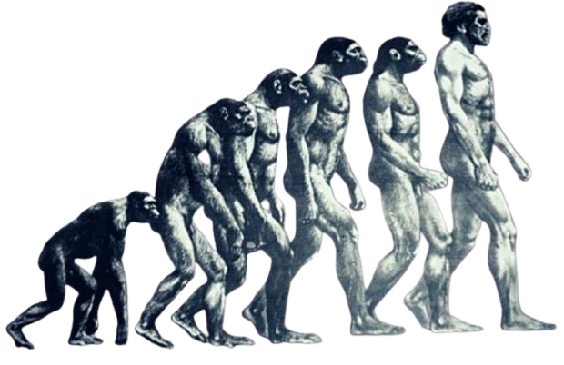
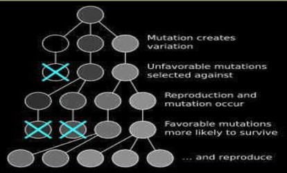
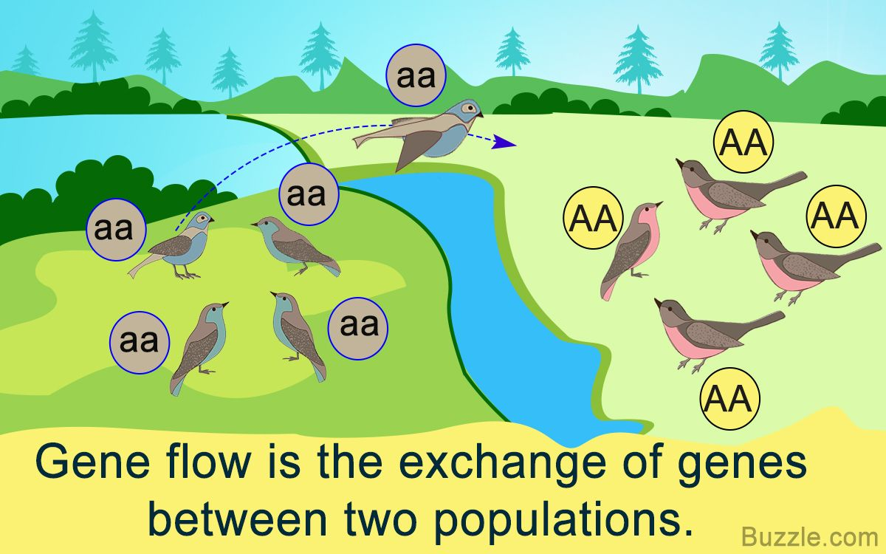
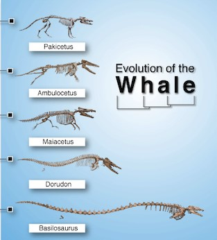
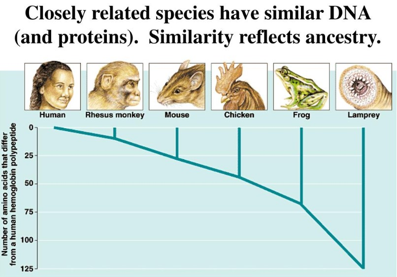

Evolution is the fundamental biological process explaining the diversity and adaptation of life on Earth. It is defined as a change in the heritable characteristics (traits or gene frequencies) of biological populations over successive generations. Simply put, it's how life changes over time.

Core Concepts & Historical Context
- Change Over Time: Evolution is not about individuals changing during their lifetime, but about changes in the genetic makeup of populations across generations.
- Common Ancestry: A core tenet is that all life on Earth shares a common ancestor, with species diversifying over millions of years through evolutionary processes.
- Charles Darwin & Alfred Russel Wallace: Independently proposed Natural Selection as the primary mechanism driving evolution in the mid-19th century. Darwin's On the Origin of Species (1859) solidified this theory.
Mechanisms of Evolution (How Evolution Happens)
While Natural Selection is the most powerful, other mechanisms also contribute to evolutionary change:
Natural Selection
- Mechanism: Differential survival and reproduction of individuals based on their fitness (suitability to the environment). Favorable traits increase in frequency.
- Driver: Environmental pressures "select" for advantageous heritable traits.
- Result: Adaptation – organisms become better suited to their environment.

Mutation
- Mechanism: Random changes in the DNA sequence.
- Significance: The ultimate source of all new genetic variation in a population. Without mutations, there would be no new traits for natural selection to act upon.
- Nature: Most mutations are neutral or harmful; a small fraction can be beneficial.
- Inheritance: Only mutations in gametes (sperm/egg) are passed to offspring.
Gene Flow (Migration)
- Mechanism: The movement of alleles (gene variants) into or out of a population due to the migration of individuals or their gametes.
- Effect: Introduces new genetic variation to a population or changes existing allele frequencies. Tends to make populations more genetically similar.
- Example: A group of birds from one island population migrating to another, introducing new genes.

Genetic Drift
- Mechanism: Random fluctuations in allele frequencies in a population from one generation to the next. More pronounced in small populations.
- Nature: Completely random; not driven by fitness or environmental pressure. Can lead to loss of alleles or fixation of others by chance.
- Key Forms:
- Bottleneck Effect: A drastic reduction in population size (e.g., due to a natural disaster) leads to a random subset of alleles surviving, reducing genetic diversity.
- Founder Effect: A small group of individuals separates from a larger population and establishes a new colony. The new gene pool is limited to those "founders," potentially very different from the original population's gene pool.
Evidence for Evolution
Evolution is one of the most robustly supported theories in science, backed by overwhelming evidence from multiple fields:
Fossil Record (Paleontology)
- Evidence: Shows changes in organisms over geological time (e.g., transitional fossils linking ancient and modern forms, sequence of life forms from simpler to more complex).
- Example: Fossils of Archaeopteryx showing features of both reptiles and birds.

Comparative Anatomy
- Homologous Structures: Similar anatomical structures in different species (e.g., forelimbs of humans, bats, whales, cats) indicating a common ancestor, even if they have different functions.
- Analogous Structures: Structures with similar functions but different evolutionary origins (e.g., wings of birds and insects), showing convergent evolution (adaptation to similar environments).
- Vestigial Structures: Reduced or non-functional structures (e.g., human appendix, whale pelvis) that were functional in ancestors.
Comparative Embryology
- Evidence: Similarities in the early developmental stages (embryos) of diverse vertebrates suggest common ancestry.
- Example: Fish, amphibians, reptiles, birds, and mammals all exhibit gill slits and a tail during early embryonic development.
Molecular Biology (Biochemistry & Genetics)
- Evidence: Striking similarities in DNA sequences, RNA, and protein sequences (amino acids) among different species. The more closely related two species are, the more similar their molecular makeup.
- Example: Humans and chimpanzees share about 98% of their DNA. All life uses the same genetic code.

Biogeography
- Evidence: The geographical distribution of species, showing that closely related species are often found in the same geographical areas, suggesting they evolved from a common ancestor in that region. Isolated islands often have unique species found nowhere else.
Direct Observation
- Evidence: Evolution can be observed in real-time in organisms with short generation times.
- Examples: Rapid evolution of antibiotic resistance in bacteria, pesticide resistance in insects, viral evolution (e.g., influenza), changes in populations due to artificial selection (selective breeding of crops/animals).
Key Takeaways
- Unifying Theory: Evolution is the central, unifying theory of biology, explaining biodiversity, adaptation, and the history of life.
- Interconnectedness: Emphasizes the interconnectedness of all living things.
- Impact on Society: Crucial for understanding disease, agriculture, conservation, and biotechnology.
- Ongoing Process: Evolution is not a historical event but a continuous process.
Written by Kasiban Parthipan